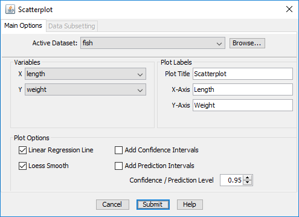

CADStat: Statistical Tools for Causal Analysis
Scatterplot
Introduction
Scatterplots are used to examine the relationship between two variables. This can be the first step in the construction of a linear or non-linear model of the relationship between two variables.
Tool Use
Select Graph -> Scatterplot from the menus. A dialog box will open. Select the data set of interest from the pull-down menu, or browse for a tab-delimited text file. The Data Subsetting tab can be used to select a subset of the data file by choosing a variable from the pull down menu and then selecting the levels of that variable to include. You can hold down the <CTRL> key to select multiple levels. A separate plot will be produced for each unique setting of the subsetting variables.
Select a variable to plot on the x-axis and a different variable to plot on the y-axis.
A regression fit can be overlaid on the scatterplot. If Linear Regression Line is selected, a straight line fit is drawn. If Loess Smooth is selected, a nonparametric loess fit is drawn.
You may change the axes labels and plot title by typing them in the Labels dialog.
The output is simply the scatterplot graph with any overlaid fits requested.
Example
For this example, load the fish length and weight data (fish.lwr.txt) from the CADStat example data. (Consult the help page on Loading and merging data to load this example data). Then select Graph -> Scatterplot.
Once the scatterplot dialog window opens, there are several options that are available. For datasets with multiple variables, different bivariate relationships can be explored through variable selection. As is traditionally the case, the x variable corresponds to the horizontal axis and the y variable corresponds to the vertical axis. The data can be presented with either a corresponding linear regression line or loess smooth by checking either of the corresponding boxes under the plotting options.

The results from example shown above, using the fish.lwr dataset are shown below with the corresponding linear regression (solid line) and the loess smooth (dashed line).